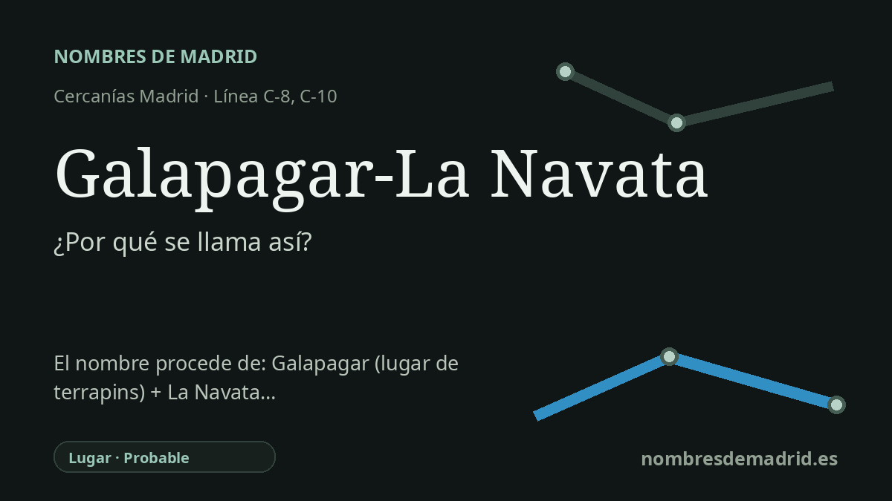

Publicado el · Investigación de Nombres de Madrid · Cómo verificamos cada origen · 9 fuentes consultadas
Respuesta rápida
Galapagar-La Navata es un nombre compuesto: identifica el municipio de Galapagar y el entorno de La Navata. Galapagar se explica con solidez como «lugar abundante en galápagos», mientras que La Navata probablemente alude a una pequeña nava, una tierra llana, abierta y a veces húmeda entre alturas.
La historia del nombre
El nombre de la estación es un compuesto funcional. Une Galapagar, el municipio, con La Navata, el barrio y antiguo topónimo local del entorno de la estación. Adif y Renfe recogen la instalación como Galapagar-La Navata, y el Consorcio Regional de Transportes la sitúa en Cercanías C-8/C-8a y C-10, con acceso por la carretera de Galapagar-La Navata.
La parte etimológica más sólida es Galapagar. Toponomasticon Hispaniae lo explica como un topónimo colectivo-abundancial formado a partir de galápago y el sufijo -ar: en términos sencillos, un lugar donde abundaban los galápagos. El DLE define galápago como un reptil quelonio parecido a la tortuga, y la Comunidad de Madrid describe el escudo municipal como verde y sembrado de galápagos de oro, un reflejo heráldico de esa misma asociación.
La Navata está menos documentada como etimología específica del nombre de estación, pero la vía lingüística es verosímil. El DLE define nava como una voz prerromana, comparable con el vasco naba, para una tierra llana, sin árboles y a veces pantanosa, situada generalmente entre montañas. La forma local Navata puede entenderse como una nava pequeña o concreta, coherente con el paisaje del Guadarrama y con referencias antiguas a navas en el entorno de Galapagar.
El contexto ferroviario importa porque el nombre actual no fue necesariamente el primer nombre usado por los viajeros. El tramo Madrid-El Escorial del ferrocarril del Norte se abrió el 9 de agosto de 1861 y más tarde quedó integrado en la red de Cercanías de Madrid. Una historia ferroviaria publicada indica que en los años noventa La Navata pasó a denominarse Galapagar-La Navata, incorporando el municipio al nombre local del apeadero.
Por tanto, la redacción actual es en gran parte correcta, pero conviene matizarla. Primero, nava no debe presentarse simplemente como vasca: la Academia la considera prerromana y solo la compara con el vasco naba. Segundo, la explicación concreta de La Navata como diminutivo de nava es probable, no una prueba directa localizada en una entrada toponímica autorizada para este lugar exacto.